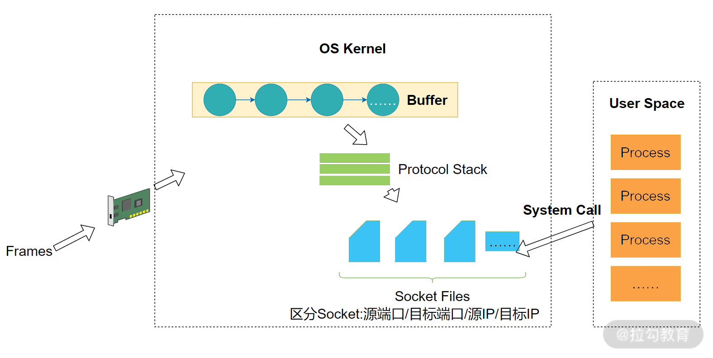

35 Linux 的 IO 模式：selectpollepoll 有什么区别？¶
我们总是想方设法地提升系统的性能。操作系统层面不能给予处理业务逻辑太多帮助，但对于 I/O 性能，操作系统可以通过底层的优化，帮助应用做到极致。
这一讲我将和你一起讨论 I/O 模型。为了引发你更多的思考，我将同步/异步、阻塞/非阻塞等概念滞后讲解。我们先回到一个最基本的问题：如果有一台服务器，需要响应大量的请求，操作系统如何去架构以适应这样高并发的诉求。
说到架构，就离不开操作系统提供给应用程序的系统调用。我们今天要介绍的 select/poll/epoll 刚好是操作系统提供给应用的三类处理 I/O 的系统调用。这三类系统调用有非常强的代表性，这一讲我会围绕它们，以及处理并发和 I/O 多路复用，为你讲解操作系统的 I/O 模型。
从网卡到操作系统¶
为了弄清楚高并发网络场景是如何处理的，我们先来看一个最基本的内容： 当数据到达网卡之后，操作系统会做哪些事情？
网络数据到达网卡之后，首先需要把数据拷贝到内存。拷贝到内存的工作往往不需要消耗 CPU 资源，而是通过 DMA 模块直接进行内存映射。之所以这样做，是因为网卡没有大量的内存空间，只能做简单的缓冲，所以必须赶紧将它们保存下来。
Linux 中用一个双向链表作为缓冲区，你可以观察下图中的 Buffer，看上去像一个有很多个凹槽的线性结构，每个凹槽（节点）可以存储一个封包，这个封包可以从网络层看（IP 封包），也可以从传输层看（TCP 封包）。操作系统不断地从 Buffer 中取出数据，数据通过一个协议栈，你可以把它理解成很多个协议的集合。协议栈中数据封包找到对应的协议程序处理完之后，就会形成 Socket 文件。
!
{kind=link}
如果高并发的请求量级实在太大，有可能把 Buffer 占满，此时，操作系统就会拒绝服务。网络上有一种著名的攻击叫作 拒绝服务攻击，就是利用的这个原理。操作系统拒绝服务，实际上是一种保护策略。通过拒绝服务，避免系统内部应用因为并发量太大而雪崩。
如上图所示，传入网卡的数据被我称为 Frames。一个 Frame 是数据链路层的传输单位（或封包）。现代的网卡通常使用 DMA 技术，将 Frame 写入缓冲区（Buffer），然后在触发 CPU 中断交给操作系统处理。操作系统从缓冲区中不断取出 Frame，通过协进栈（具体的协议）进行还原。
在 UNIX 系的操作系统中，一个 Socket 文件内部类似一个双向的管道。因此，非常适用于进程间通信。在网络当中，本质上并没有发生变化。网络中的 Socket 一端连接 Buffer， 一端连接应用——也就是进程。网卡的数据会进入 Buffer，Buffer 经过协议栈的处理形成 Socket 结构。通过这样的设计，进程读取 Socket 文件，可以从 Buffer 中对应节点读走数据。
对于 TCP 协议，Socket 文件可以用源端口、目标端口、源 IP、目标 IP 进行区别。不同的 Socket 文件，对应着 Buffer 中的不同节点。进程们读取数据的时候从 Buffer 中读取，写入数据的时候向 Buffer 中写入。通过这样一种结构，无论是读和写，进程都可以快速定位到自己对应的节点。
以上就是我们对操作系统和网络接口交互的一个基本讨论。接下来，我们讨论一下作为一个编程模型的 Socket。
Socket 编程模型¶
通过前面讲述，我们知道 Socket 在操作系统中，有一个非常具体的从 Buffer 到文件的实现。但是对于进程而言，Socket 更多是一种编程的模型。接下来我们讨论作为编程模型的 Socket。
{kind=link}
如上图所示，Socket 连接了应用和协议，如果应用层的程序想要传输数据，就创建一个 Socket。应用向 Socket 中写入数据，相当于将数据发送给了另一个应用。应用从 Socket 中读取数据，相当于接收另一个应用发送的数据。而具体的操作就是由 Socket 进行封装。具体来说，对于 UNIX 系的操作系统，是利用 Socket 文件系统，Socket 是一种特殊的文件——每个都是一个双向的管道。一端是应用，一端是缓冲 区。
那么作为一个服务端的应用，如何知道有哪些 Socket 呢？也就是，哪些客户端连接过来了呢？这是就需要一种特殊类型的 Socket，也就是服务端 Socket 文件。

如上图所示，当有客户端连接服务端时，服务端 Socket 文件中会写入这个客户端 Socket 的文件描述符。进程可以通过 accept() 方法，从服务端 Socket 文件中读出客户端的 Socket 文件描述符，从而拿到客户端的 Socket 文件。
程序员实现一个网络服务器的时候，会先手动去创建一个服务端 Socket 文件。服务端的 Socket 文件依然会存在操作系统内核之中，并且会绑定到某个 IP 地址和端口上。以后凡是发送到这台机器、目标 IP 地址和端口号的连接请求，在形成了客户端 Socket 文件之后，文件的文件描述符都会被写入到服务端的 Socket 文件中。应用只要调用 accept 方法，就可以拿到这些客户端的 Socket 文件描述符，这样服务端的应用就可以方便地知道有哪些客户端连接了进来。
而每个客户端对这个应用而言，都是一个文件描述符。如果需要读取某个客户端的数据，就读取这个客户端对应的 Socket 文件。如果要向某个特定的客户端发送数据，就写入这个客户端的 Socket 文件。
以上就是 Socket 的编程模型。
I/O 多路复用¶
在上面的讨论当中，进程拿到了它关注的所有 Socket，也称作关注的集合（Intersting Set）。如下图所示，这种过程相当于进程从所有的 Socket 中，筛选出了自己关注的一个子集，但是这时还有一个问题没有解决： 进程如何监听关注集合的状态变化，比如说在有数据进来，如何通知到这个进程？

其实更准确地说，一个线程需要处理所有关注的 Socket 产生的变化，或者说消息。实际上一个线程要处理很多个文件的 I/O。所有关注的 Socket 状态发生了变化，都由一个线程去处理，构成了 I/O 的多路复用问题。如下图所示：
{kind=link}
处理 I/O 多路复用的问题，需要操作系统提供内核级别的支持。Linux 下有三种提供 I/O 多路复用的 API，分别是：
- select
- poll
- epoll
如下图所示，内核了解网络的状态。因此不难知道具体发生了什么消息，比如内核知道某个 Socket 文件状态发生了变化。但是内核如何知道该把哪个消息给哪个进程呢？

一个 Socket 文件，可以由多个进程使用；而一个进程，也可以使用多个 Socket 文件。进程和 Socket 之间是多对多的关系。另一方面，一个 Socket 也会有不同的事件类型。因此操作系统很难判断，将哪样的事件给哪个进程。
这样 在进程内部就需要一个数据结构来描述自己会关注哪些 Socket 文件的哪些事件（读、写、异常等 ）。通常有两种考虑方向，一种是利用线性结构，比如说数组、链表等，这类结构的查询需要遍历。每次内核产生一种消息，就遍历这个线性结构。看看这个消息是不是进程关注的？另一种是索引结构，内核发生了消息可以通过索引结构马上知道这个消息进程关不关注。
select()¶
select 和 poll 都采用线性结构，select 允许用户传入 3 个集合。如下面这段程序所示：
fd_set read_fd_set, write_fd_set, error_fd_set;
while(true) {
select(..., &read_fd_set, &write_fd_set, &error_fd_set);
}
每次 select 操作会阻塞当前线程，在阻塞期间所有操作系统产生的每个消息，都会通过遍历的手段查看是否在 3 个集合当中。上面程序read_fd_set中放入的是当数据可以读取时进程关心的 Socket；write_fd_set是当数据可以写入时进程关心的 Socket；error_fd_set是当发生异常时进程关心的 Socket。
用户程序可以根据不同集合中是否有某个 Socket 判断发生的消息类型， 程序如下所示：
fd_set read_fd_set, write_fd_set, error_fd_set;
while(true) {
select(..., &read_fd_set, &write_fd_set, &error_fd_set);
for (i = 0; i \< FD_SETSIZE; ++i)
if (FD_ISSET (i, &read_fd_set)){
// Socket 可以读取
} else if(FD_ISSET(i, &write_fd_set)) {
// Socket 可以写入
} else if(FD_ISSET(i, &error_fd_set)) {
// Socket 发生错误
}
上面程序中的 FD_SETSIZE 是一个系统的默认设置，通常是 1024。可以看出，select 模式能够一次处理的文件描述符是有上限的，也就是 FD_SETSIZE。当并发请求过多的时候， select 就无能为力了。但是对单台机器而言，1024 个并发已经是一个非常大的流量了。
接下来我给出一个完整的、用 select 实现的服务端程序供你参考，如下所示：
# include \<stdio.h>
# include \<errno.h>
# include \<stdlib.h>
# include \<unistd.h>
# include \<sys/types.h>
# include \<sys/Socket.h>
# include \<netinet/in.h>
# include \<netdb.h>
# define PORT 5555
# define MAXMSG 512
int
read_from_client (int filedes)
{
char buffer[MAXMSG];
int nbytes;
nbytes = read (filedes, buffer, MAXMSG);
if (nbytes \< 0)
{
/Read error./
perror ("read");
exit (EXIT_FAILURE);
}
/End-of-file./
return -1;
{
/Data read./
fprintf (stderr, "Server: got message: `%s'\n", buffer);
return 0;
} __PLACEHOLDER_6__plaintext {
perror ("listen");
exit (EXIT_FAILURE);
} __PLACEHOLDER_7__java {
/Block until input arrives on one or more active Sockets./
read_fd_set = active_fd_set;
if (select (FD_SETSIZE, &read_fd_set, NULL, NULL, NULL) < 0)
{
perror ("select");
exit (EXIT_FAILURE);
}
/Service all the Sockets with input pending./
for (i = 0; i < FD_SETSIZE; ++i)
if (FD_ISSET (i, &read_fd_set))
{
if (i == sock)
{
/* Connection request on original Socket. */
int new;
size = sizeof (clientname);
new = accept (sock,
(struct sockaddr *) &clientname,
&size);
if (new < 0)
{
perror ("accept");
exit (EXIT_FAILURE);
}
fprintf (stderr,
"Server: connect from host %s, port %hd.\n",
inet_ntoa (clientname.sin_addr),
ntohs (clientname.sin_port));
FD_SET (new, &active_fd_set);
}
else
{
/* Data arriving on an already-connected Socket. */
if (read_from_client (i) < 0)
{
close (i);
FD_CLR (i, &active_fd_set);
}
}
}
} __PLACEHOLDER_8__sql
poll()¶
从写程序的角度来看，select 并不是一个很好的编程模型。一个好的编程模型应该直达本质，当网络请求发生状态变化的时候，核心是会发生事件。一个好的编程模型应该是直接抽象成消息：用户不需要用 select 来设置自己的集合，而是可以通过系统的 API 直接拿到对应的消息，从而处理对应的文件描述符。
比如下面这段伪代码就是一个更好的编程模型，具体的分析如下：
- poll 是一个阻塞调用，它将某段时间内操作系统内发生的且进程关注的消息告知用户程序；
- 用户程序通过直接调用 poll 函数拿到消息；
- poll 函数的第一个参数告知内核 poll 关注哪些 Socket 及消息类型；
- poll 调用后，经过一段时间的等待（阻塞），就拿到了是一个消息的数组；
- 通过遍历这个数组中的消息，能够知道关联的文件描述符和消息的类型；
- 通过消息类型判断接下来该进行读取还是写入操作；
- 通过文件描述符，可以进行实际地读、写、错误处理。 __PLACEHOLDER_9__plaintext fd = evt.fd;
type = evt.revents;
if(type & POLLIN ) {
// 有数据需要读，读取fd中的数据
} else if(type & POLLOUT) {
// 可以写入数据
}
else ... __PLACEHOLDER_10__sql poll 虽然优化了编程模型，但是从性能角度分析，它和 select 差距不大。因为内核在产生一个消息之后，依然需要遍历 poll 关注的所有文件描述符来确定这条消息是否跟用户程序相关。
epoll¶
为了解决上述问题，epoll 通过更好的方案实现了从操作系统订阅消息。epoll 将进程关注的文件描述符存入一棵二叉搜索树，通常是红黑树的实现。在这棵红黑树当中，Key 是 Socket 的编号，值是这个 Socket 关注的消息。因此，当内核发生了一个事件：比如 Socket 编号 1000 可以读取。这个时候，可以马上从红黑树中找到进程是否关注这个事件。
另外当有关注的事件发生时，epoll 会先放到一个队列当中。当用户调用 epoll_wait时候，就会从队列中返回一个消息。epoll 函数本身是一个构造函数，只用来创建红黑树和队列结构。epoll_wait调用后，如果队列中没有消息，也可以马上返回。因此epoll是一个非阻塞模型。总结一下，select/poll 是阻塞模型，epoll 是非阻塞模型。当然，并不是说非阻塞模型性能就更好。在多数情况下，epoll 性能更好是因为内部有红黑树的实现。
最后我再贴一段用 epoll 实现的 Socket 服务给你做参考，这段程序的作者将这段代码放到了 Public Domain，你以后看到公有领域的代码可以放心地使用。
下面这段程序跟之前 select 的原理一致，对于每一个新的客户端连接，都使用 accept 拿到这个连接的文件描述符，并且创建一个客户端的 Socket。然后通过epoll_ctl将客户端的文件描述符和关注的消息类型放入 epoll 的红黑树。操作系统每次监测到一个新的消息产生，就会通过红黑树对比这个消息是不是进程关注的（当然这段代码你看不到，因为它在内核程序中）。非阻塞模型的核心价值，并不是性能更好。当真的高并发来临的时候，所有的 CPU 资源，所有的网络资源可能都会被用完。这个时候无论是阻塞还是非阻塞，结果都不会相差太大。（前提是程序没有写错）。
epoll有 2 个最大的优势：
- 内部使用红黑树减少了内核的比较操作；
- 对于程序员而言，非阻塞的模型更容易处理各种各样的情况。程序员习惯了写出每一条语句就可以马上得到结果，这样不容易出 Bug。 __PLACEHOLDER_11__plaintext socklen_t peer_addr_len) { __PLACEHOLDER_12__plaintext peerstate->sendptr < peerstate->sendbuf_end) {
// Until the initial ACK has been sent to the peer, there's nothing we
// want to receive. Also, wait until all data staged for sending is sent to
// receive more data.
return fd_status_W; __PLACEHOLDER_13__plaintext // The peer disconnected.
return fd_status_NORW; __PLACEHOLDER_14__plaintext if (errno == EAGAIN || errno == EWOULDBLOCK) {
// The Socket is not really ready for recv; wait until it is.
return fd_status_R;
} else {
perror_die("recv");
} __PLACEHOLDER_15__plaintext switch (peerstate->state) {
case INITIAL_ACK:
assert(0 && "can't reach here");
break;
case WAIT_FOR_MSG:
if (buf[i] == '^') {
peerstate->state = IN_MSG;
}
break;
case IN_MSG:
if (buf[i] == '$') {
peerstate->state = WAIT_FOR_MSG;
} else {
assert(peerstate->sendbuf_end < SENDBUF_SIZE);
peerstate->sendbuf[peerstate->sendbuf_end++] = buf[i] + 1;
ready_to_send = true;
}
break;
} __PLACEHOLDER_16__plaintext .want_write = ready_to_send}; __PLACEHOLDER_17__plaintext // Nothing to send.
return fd_status_RW; __PLACEHOLDER_18__plaintext if (errno == EAGAIN || errno == EWOULDBLOCK) {
return fd_status_W;
} else {
perror_die("send");
} __PLACEHOLDER_19__plaintext peerstate->sendptr += nsent;
return fd_status_W; __PLACEHOLDER_20__plaintext // Everything was sent successfully; reset the send queue.
peerstate->sendptr = 0;
peerstate->sendbuf_end = 0;
// Special-case state transition in if we were in INITIAL_ACK until now.
if (peerstate->state == INITIAL_ACK) {
peerstate->state = WAIT_FOR_MSG;
}
return fd_status_R; __PLACEHOLDER_21__plaintext portnum = atoi(argv[1]); __PLACEHOLDER_22__plaintext perror_die("epoll_create1"); __PLACEHOLDER_23__plaintext perror_die("epoll_ctl EPOLL_CTL_ADD"); __PLACEHOLDER_24__plaintext die("Unable to allocate memory for epoll_events"); __PLACEHOLDER_25__java int nready = epoll_wait(epollfd, events, MAXFDS, -1);
for (int i = 0; i < nready; i++) {
if (events[i].events & EPOLLERR) {
perror_die("epoll_wait returned EPOLLERR");
}
if (events[i].data.fd == listener_sockfd) {
// The listening Socket is ready; this means a new peer is connecting.
struct sockaddr_in peer_addr;
socklen_t peer_addr_len = sizeof(peer_addr);
int newsockfd = accept(listener_sockfd, (struct sockaddr*)&peer_addr,
&peer_addr_len);
if (newsockfd < 0) {
if (errno == EAGAIN || errno == EWOULDBLOCK) {
// This can happen due to the nonblocking Socket mode; in this
// case don't do anything, but print a notice (since these events
// are extremely rare and interesting to observe...)
printf("accept returned EAGAIN or EWOULDBLOCK\n");
} else {
perror_die("accept");
}
} else {
make_Socket_non_blocking(newsockfd);
if (newsockfd >= MAXFDS) {
die("Socket fd (%d) >= MAXFDS (%d)", newsockfd, MAXFDS);
}
fd_status_t status =
on_peer_connected(newsockfd, &peer_addr, peer_addr_len);
struct epoll_event event = {0};
event.data.fd = newsockfd;
if (status.want_read) {
event.events |= EPOLLIN;
}
if (status.want_write) {
event.events |= EPOLLOUT;
}
if (epoll_ctl(epollfd, EPOLL_CTL_ADD, newsockfd, &event) < 0) {
perror_die("epoll_ctl EPOLL_CTL_ADD");
}
}
} else {
// A peer Socket is ready.
if (events[i].events & EPOLLIN) {
// Ready for reading.
int fd = events[i].data.fd;
fd_status_t status = on_peer_ready_recv(fd);
struct epoll_event event = {0};
event.data.fd = fd;
if (status.want_read) {
event.events |= EPOLLIN;
}
if (status.want_write) {
event.events |= EPOLLOUT;
}
if (event.events == 0) {
printf("Socket %d closing\n", fd);
if (epoll_ctl(epollfd, EPOLL_CTL_DEL, fd, NULL) < 0) {
perror_die("epoll_ctl EPOLL_CTL_DEL");
}
close(fd);
} else if (epoll_ctl(epollfd, EPOLL_CTL_MOD, fd, &event) < 0) {
perror_die("epoll_ctl EPOLL_CTL_MOD");
}
} else if (events[i].events & EPOLLOUT) {
// Ready for writing.
int fd = events[i].data.fd;
fd_status_t status = on_peer_ready_send(fd);
struct epoll_event event = {0};
event.data.fd = fd;
if (status.want_read) {
event.events |= EPOLLIN;
}
if (status.want_write) {
event.events |= EPOLLOUT;
}
if (event.events == 0) {
printf("Socket %d closing\n", fd);
if (epoll_ctl(epollfd, EPOLL_CTL_DEL, fd, NULL) < 0) {
perror_die("epoll_ctl EPOLL_CTL_DEL");
}
close(fd);
} else if (epoll_ctl(epollfd, EPOLL_CTL_MOD, fd, &event) < 0) {
perror_die("epoll_ctl EPOLL_CTL_MOD");
}
}
}
} __PLACEHOLDER_26__plaintext
重新思考：I/O 模型¶
在上面的模型当中，select/poll 是阻塞（Blocking）模型，epoll 是非阻塞（Non-Blocking）模型。阻塞和非阻塞强调的是线程的状态，所以阻塞就是触发了线程的阻塞状态，线程阻塞了就停止执行，并且切换到其他线程去执行，直到触发中断再回来。
还有一组概念是同步（Synchrounous）和异步（Asynchrounous），select/poll/epoll 三者都是同步调用。
同步强调的是顺序， 所谓同步调用，就是可以确定程序执行的顺序的调用。比如说执行一个调用，知道调用返回之前下一行代码不会执行。这种顺序是确定的情况，就是同步。
而异步调用则恰恰相反，异步调用不明确执行顺序。比如说一个回调函数，不知道何时会回来。异步调用会加大程序员的负担，因为我们习惯顺序地思考程序。因此，我们还会发明像协程的 yield 、迭代器等将异步程序转为同步程序。
由此可见，非阻塞不一定是异步，阻塞也未必就是同步。比如一个带有回调函数的方法，阻塞了线程 100 毫秒，又提供了回调函数，那这个方法是异步阻塞。例如下面的伪代码： __PLACEHOLDER_27__plaintext
总结¶
总结下，操作系统给大家提供各种各样的 API，是希望满足各种各样程序架构的诉求。但总体诉求其实是一致的：希望程序员写的单机代码，能够在多线程甚至分布式的环境下执行。这样你就不需要再去学习复杂的并发控制算法。从这个角度去看，非阻塞加上同步的编程模型确实省去了我们编程过程当中的很多思考。
但可惜的是，至少在今天这个时代，多线程、并发编程依然是程序员们的必修课。因此你在思考 I/O 模型的时候，还是需要结合自己的业务特性及系统自身的架构特点，进行选择。I/O 模型并不是选择效率，而是选择编程的手段。试想一个所有资源都跑满了的服务器，并不会因为是异步或者非阻塞模型就获得更高的吞吐量。
那么通过以上的学习，你现在可以尝试来回答本讲关联的面试题目：select/poll/epoll 有什么区别？
【 解析 】这三者都是处理 I/O 多路复用的编程手段。select/poll 模型是一种阻塞模型，epoll 是非阻塞模型。select/poll 内部使用线性结构存储进程关注的 Socket 集合，因此每次内核要判断某个消息是否发送给 select/poll 需要遍历进程关注的 Socket 集合。
而 epoll 不同，epoll 内部使用二叉搜索树（红黑树），用 Socket 编号作为索引，用关注的事件类型作为值，这样内核可以在非常快的速度下就判断某个消息是否需要发送给使用 epoll 的线程。
```